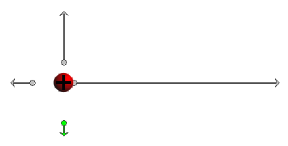
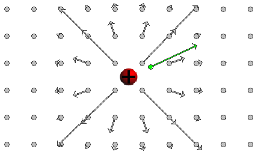
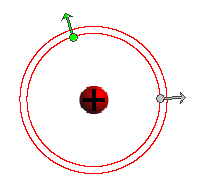

Prerequisites
Students should be somewhat familiar with the concept of charge and Coulomb's law of electrostatics.
Learning Outcomes
Students will be introduced to the definition of the electric field and will develop an understanding of the characteristics of the electric field of a point charge, including the electric field lines and equipotential lines surrounding a point charge. Students will be introduced to the concept of electric potential and will acquire a first understanding of this concept.
Instructions
Students should know how the applet functions, as described in Help and ShowMe.
The applet should be open. The step-by-step instructions in the following text are to be done in the applet. You may need to toggle back and forth between instructions and applet if your screen space is limited.
 Laws, Theorems, Definitions
Laws, Theorems, Definitions
 Coulomb's Law of Electrostatics
Coulomb's Law of Electrostatics
 Theorem on Electric Forces Exerted by Charged
Spheres
Theorem on Electric Forces Exerted by Charged
Spheres
 Definition of Electric Field and Electric Field
Lines
Definition of Electric Field and Electric Field
Lines
 Electric Potential and Equipotential Lines
Electric Potential and Equipotential Lines

Any two particles carrying electric charges q1 and q2 exert electrostatic forces on each other. If the two charges have the same sign, the particles exert repulsive forces on each other. If they have opposite sign, the forces are attractive. The force exerted on Particle 1 has the same magnitude F as the force exerted on Particle 2, equal toF = k|q1||q2| / d2
(1)
where d is the separation between the two particles and k is a universal constant whose value is
k = 8.988×109 N m2 C-2.

Coulomb's law of electrostatics describes forces that two point particles exert on each other. A spherical object, like the source object in the present applet, is not a point particle, and Coulomb's law does not directly give the force exerted by a spherical object on a (point) particle. However, one can prove the following theorem which states that a charged sphere behaves like a point particle under certain conditions.
Letdenote the electrostatic force exerted by a charged sphere of radius R on a particle at a distance d from the center of the sphere. If the total charge Q residing on the sphere is uniformly distributed throughout the sphere and if d is equal to or greater than R, i.e., if the particle is outside the sphere, then
If
=
is called the electric field at the given point.
Comment 1. Since the force is proportional to the charge
q, the electric field is independent of q and characterizes an
"electric intensity" at the given point in space that is present
without the test particle and does not depend on any properties of
the test particle.
Comment 2. The SI-unit of the electric field is N/C.
Comment 3. The electric field is defined at all
points in space. It is therefore not a single vector, but a
"vector-valued function defined on space". This simply means that to
describe the electric field one must specify the vectors at all points in space.
Comment 4. An electric field line is a line (not a straight line in general) that indicates the direction of the electric field vectors at points along the line.
The electric field vector at a given point along an electric field line is tangential to the line at that point.
A static electric field, i.e., a field accompanying one or more source charges at rest, has the property that it can be derived from a simpler field called the electric potential. The electric potential field is simpler because it is a scalar field, not a vector field like the electric field. The electric potential field assigns a scalar quantity to any given point in space called the electric potential at that point. The SI-unit of the electric potential is the volt (V).
How can a scalar field give rise to a vector field? A static electric field is constructed from its electric potential field as follows.
Suppose you know the electric potential field and want to know the electric field vector at a given point P. Look at the electric potential in the neighborhood of P. Find the direction leading away from P in which the electric potential decreases more rapidly than in any other direction. This is the direction in which the electric vector at P points.The magnitude E of the electric vector at P is equal to the magnitude of the distance-rate-of-change of the electric potential,

where |ΔV| / d is calculated in the direction of the electric field vector at P. Here |ΔV| equals |V(P') - V(P)| where P' is a point near P that lies in the direction of most rapid change of V away from P and d is the distance between P and P'.
If the electric potential is constant throughout a small neighborhood of P or if the electric potential has a maximum or minimum at P, the electric field at P is zero.
Comment 1. Equation (5) implies the SI-unit V/m for the electric field. Another SI-unit for the electric field is N/C, as mentioned in Comment 2 under "Definition of Electric Field and Electric Field Lines" above.
Comment 2. In general, the potential in the vicinity of a given point P will be decreasing in some directions, increasing in others, and remain constant along a line through P dividing the directions of decreasing and increasing potential. This dividing line is the "equipotential line" through P.
An equipotential line is a line along which the electric potential is constant.
Such lines are not straight in general. In the present case of a point charge field, the equipotential lines are circles that have the point charge at their center.
Note that one is dealing with equipotential lines when considering only two dimensions. In three dimensions, one has equipotential surfaces. In the present case of a point charge field, the equipotential surfaces are spheres that have the point charge at their center.
Comment 3. The electric field vector at a given point is always perpendicular to the equipotential line through that point. As a consequence, electric field lines and equipotential lines cross at right angles at any given point.
Comment 4. Electric equipotential lines are analogous to lines of equal altitude on a topographic map. The steepest downhill direction is the direction in which these lines are closest together, i.e., the direction in which the altitude decreases most rapidly. This is the direction of the field vector.
Task 1. Under "Laws, Theorems, Definitions" above, read the sections on
Exercise 1. From Eqs. (4) and (5), derive an expression for the magnitude E of the electric field due to a sphere of uniform charge density and total charge Q at a distance d from the center of the sphere, if the field point is outside the sphere.
What is the direction of the field vector at this point for different signs of the source charge?
Answer. Taking magnitudes on both sides of Definition (4) and substituting Expression (3) for F gives the following expression for E:
 E =
k|Q| / d2,
E =
k|Q| / d2,  d > R.
d > R. (6)
(6)
The direction of the field vector is towards the center of the sphere
if Q is negative and away from the center of the sphere if
Q is positive. Why? Base your answer on the definition of
the electric field and the direction of the force exerted by the
source on a positive test charge.
Exercise 2. RESET  the applet.
the applet.
Click on a point in the applet window to create a field point with electric field vector at that point. Drag the point and observe how the vector changes. Make sketches of what you observe, paying attention to both the magnitude and the direction of the electric field vector and the locations of the source and the field point. Are your observations about magnitude and direction of the field vector consistent with the answer to Exercise 1?
You may want to adjust the setting of the Vector Length Multiplier slider to have the field vectors represented by longer arrows.
Exercise 3. Without making any changes in the settings of the applet used in Exercise 2, drag the source while keeping the field point fixed. Make the same kinds of observations as in Exercise 2, and compare these observations to those in Exercise 2.
Discuss what determines the magnitude and direction of the field vector: the location of the source or the location of the field point? Can one change both the location of the source and of the field point so that the electric field vector remains unchanged?
Exercise 4. Suppose the arrow representing the field vector is 144 pixels long when the field point is at d = R, i.e., at the surface of the source sphere.
Write down the lengths of the field arrows you would expect at d = 2R, d = 3R, and d = 4R assuming the magnitude of the electric field were proportional to
Answer. The lengths are, in the same order as above,
Explain how these values are obtained.
Exercise 5. RESET the applet, and set the source charge to Q = 50. Make sure the Vector Length Multiplier is set to 1.
Set four field points as illustrated in Figure 1 below, i.e., at the 0o, 90o, 180o, and 270o positions at distances from the center of the source equal to R, 2R, 3R, and 4R, respectively. If you do this approximately, this is good enough for the present purpose.

Figure 1
Discuss which one of the two progressions of arrow lengths derived in Exercise 4 fits those shown by the applet. Therefore, what is the d-dependence of the electric field?
To make it easier for you to judge the lengths of the arrows, play with the Vector Length Multiplier slider. E.g., if you reset this slider from 1 to 4, all arrows become four times as long. An arrow whose length is supposed to be one fourth that of another arrow will then become as long as that other arrow was originally before the slider was reset.
Exercise 6. Display the Field-Point-Grid to again judge the dependence of the electric field on the distance d of a field point from the center of the source.
Center the source between four adjoining field points as in Figure 2 below.

Figure 2
Discuss if the lengths of the field arrows are consistent with the d-dependence found in Exercise 5.
RESET the applet.
Question 1. Click at a point in the applet window to set a field point and electric field vector at that point. What is the direction of the electric field line through that point?
Click the Field-Line button to check your answer.
Question 2. What will be the direction of the electric field vector at some other point on the electric field line from Question 1?
Click at another such point and check your answer.
Exercise 1. RESET the applet.
Set field points on an imagined circle surrounding the source roughly 45o apart, at angles roughly equal to 0o, 45o, 90o, 135o, etc. After setting each field point, draw the electric field line through the point.
Describe the electric field line pattern of a point source.
Task 1. Under "Laws, Theorems, Definitions" above, read the section on "Electric Potential and Equipotential Lines".
Question 1. Set up two field points and draw the equipotential lines through these field points such that the two circles are close to each other. See Figure 3 below for an example.

Figure 3
Move a field point along one of the equipotential lines (circles). Why is the field vector at any point always perpendicular to the equipotential line through that point?
Answer. The electric field vector points in the direction of largest rate of decrease of electric potential. This is in the direction in which one has to move the shortest distance to change the potential by a given amount. This direction is perpendicular to the equipotential lines, which is the radial direction in the case of a point source.
Question 2. Which one of the two equipotential lines in Figure 3 has the larger electric potential?
Answer. The equipotential line with the smaller radius has the larger potential because the electric field points from high to low potential.
Question 3. Suppose the potentials on the two equipotential lines in Figure 3 are 19V and 17 V, respectively, and that the radii of the two circles are equal to 10.0 cm and 10.5 cm, respectively. What is the approximate magnitude E of the electric field at the green field point in Figure 3?
Answer. Expression (5), without the limit operation, gives, in SI-units,
E = |DV|
/ d = |17 - 19| / (10.5×10-2 -
10.0×10-2) = 400 V/m.  (7)
(7)
This value for E is not exact, approximate only, because the calculation is not using infinitesimal changes.
Question 4. The SI-unit for the electric field was given
as N/C in Comment 2 following Definition (4) and as V/m in Comment 1
following Definition (5). Equate the two units and obtain an
expression for the SI-unit volt (V) of the electric potential in
terms of other SI-units. Your answer should involve the energy unit
joule (J). Note that
Answer. 1 V = 1 N m / C = 1 J/C.